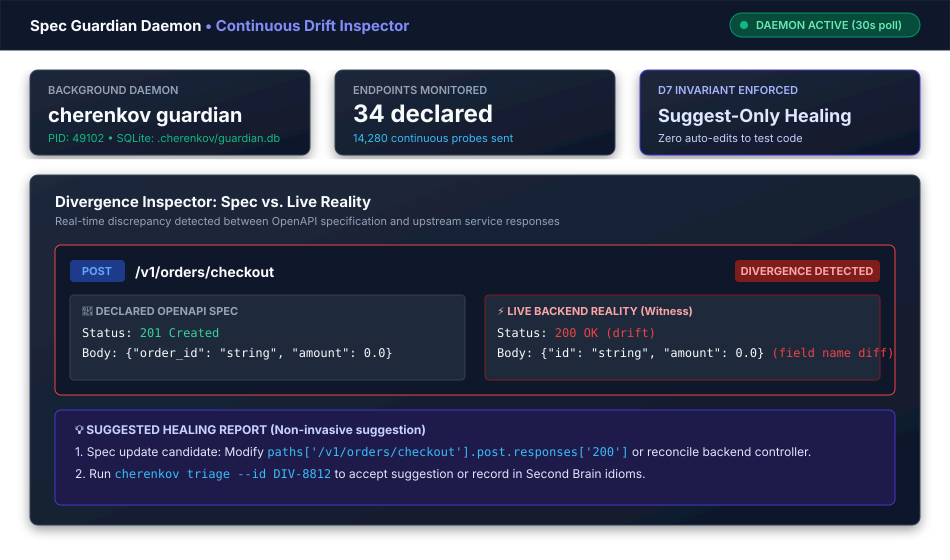

Continuous Monitoring
CHERENKOV can run as a background process that continuously polls a live API, detects spec drift as it happens, and feeds findings into the HITL queue. Two modes are available: the general-purpose daemon and the focused Spec Guardian.
Overview
flowchart TD
subgraph "Continuous Monitoring"
A[Daemon / Guardian] -->|"Poll every N seconds"| B[Live API]
B -->|"Response"| C{Matches Spec?}
C -->|Yes| D[No action]
C -->|No| E[Divergence detected]
E --> F[HITL Queue]
E --> G[Notification]
E --> H[Dashboard update]
end
subgraph "Human Review"
F --> I[Triage workspace]
I --> J[Approve / Reject]
end
style A fill:#7c3aed,stroke:#fff,stroke-width:2px,color:#fff
style E fill:#db2777,stroke:#fff,stroke-width:2px,color:#fff
Figure: Spec Guardian real-time divergence inspector catching drift between OpenAPI specification and live backend.Daemon Mode
The daemon watches your spec sources and rebuilds the Truth Model on each cycle. When --url is provided, it also probes the live server and queues any divergences.
cherenkov daemon --url http://localhost:8080
How it works
- Watch specs — monitors the OpenAPI files listed in
cherenkov.tomlfor changes (file modification time) - Rebuild truth model — when a spec changes, the truth model is regenerated
- Probe live server — sends requests to the target and compares responses against the spec
- Queue divergences — any drift is appended to
.cherenkov/divergence_queue.jsonl - Repeat — wait for the poll interval, then start again
Options
| Flag | Default | Description |
|---|---|---|
--url |
— | Live server URL to probe each cycle. Omit for spec-change-only monitoring |
--interval |
60 |
Seconds between poll cycles |
--max-loops |
0 (infinite) |
Maximum iterations before the daemon exits |
Example: watch staging every 30 seconds
cherenkov daemon --url http://staging:8080 --interval 30
Divergence Queue
Divergences are persisted to .cherenkov/divergence_queue.jsonl (one JSON object per line). The queue is consumed by the HITL subsystem and can be read by external tools:
cat .cherenkov/divergence_queue.jsonl | jq '.severity'
Spec Guardian
The Spec Guardian is a more focused monitoring tool designed for watching specific API endpoints against an OpenAPI spec. It persists drift events and history to a local SQLite database.
cherenkov guardian start \
--spec openapi.yaml \
--base-url http://localhost:8080
Default behavior
By default, the Guardian monitors every concrete GET path in the spec (paths without {parameters}). Non-GET methods are excluded to avoid mutating the target on every poll cycle.
Override endpoints
Use --endpoint flags to monitor specific endpoints, including non-GET methods:
cherenkov guardian start \
--spec openapi.yaml \
--base-url http://localhost:8080 \
--endpoint "GET:/health" \
--endpoint "GET:/api/v1/status" \
--interval 10
Options
| Flag | Default | Description |
|---|---|---|
--spec |
(required) | Path to the OpenAPI spec (YAML or JSON) |
--base-url |
(required) | Base URL of the live API |
--interval, -i |
60 |
Seconds between check cycles |
--endpoint |
All concrete GET paths | Repeatable METHOD:PATH to override default endpoint list |
--db |
.cherenkov/guardian.db |
SQLite database for drift history |
Example: focused health monitoring
cherenkov guardian start \
--spec openapi.yaml \
--base-url http://production:8080 \
--endpoint "GET:/health" \
--endpoint "GET:/api/v1/status" \
--interval 10 \
--db .cherenkov/prod-guardian.db
Daemon vs. Guardian
| Feature | Daemon | Guardian |
|---|---|---|
| Scope | Full pipeline (truth model + probing) | Endpoint-level spec conformance |
| Spec change detection | Yes (watches file mtimes) | No (static spec) |
| Storage | JSONL queue | SQLite database |
| Endpoint selection | All from spec | Concrete GET paths (customizable) |
| Best for | Development/staging continuous monitoring | Production health checks |
Combining with CI/CD
Use continuous monitoring alongside CI gates for defense in depth:
flowchart LR
subgraph "Shift Left (CI)"
A["PR opened"] --> B["cherenkov validate\n--fail-on-drift"]
B --> C["cherenkov certify\n--fail-on-fail"]
end
subgraph "Shift Right (Monitoring)"
D["Deploy to staging"] --> E["cherenkov daemon\n--url staging:8080"]
F["Deploy to production"] --> G["cherenkov guardian start\n--base-url prod:8080"]
end
E -->|"Drift found"| H[HITL Queue]
G -->|"Drift found"| H
style B fill:#7c3aed,stroke:#fff,stroke-width:2px,color:#fff
style E fill:#db2777,stroke:#fff,stroke-width:2px,color:#fff
style G fill:#059669,stroke:#fff,stroke-width:2px,color:#fffShift left: Catch drift before it merges. cherenkov validate and cherenkov certify run in your CI pipeline.
Shift right: Catch drift after deployment. The daemon or Guardian polls continuously and feeds findings to the HITL queue.
Running as a Service
systemd
# /etc/systemd/system/cherenkov-guardian.service
[Unit]
Description=CHERENKOV Spec Guardian
After=network.target
[Service]
Type=simple
User=cherenkov
WorkingDirectory=/opt/cherenkov-qa
ExecStart=/opt/cherenkov-qa/.venv/bin/cherenkov guardian start \
--spec /etc/cherenkov/openapi.yaml \
--base-url http://localhost:8080 \
--interval 60
Restart=on-failure
RestartSec=10
[Install]
WantedBy=multi-user.target
Docker Compose
services:
guardian:
build: .
command: ["guardian", "start", "--spec", "/specs/openapi.yaml", "--base-url", "http://api:8080", "--interval", "30"]
volumes:
- ./specs:/specs:ro
- ./.cherenkov:/app/.cherenkov
restart: unless-stopped
Next Steps
- Human-in-the-Loop Workflow — triage the findings the daemon generates
- Dashboard & UI — view live drift events as they arrive
- CI/CD Integration — combine shift-left and shift-right
- Docker & Deployment — run the daemon in Docker